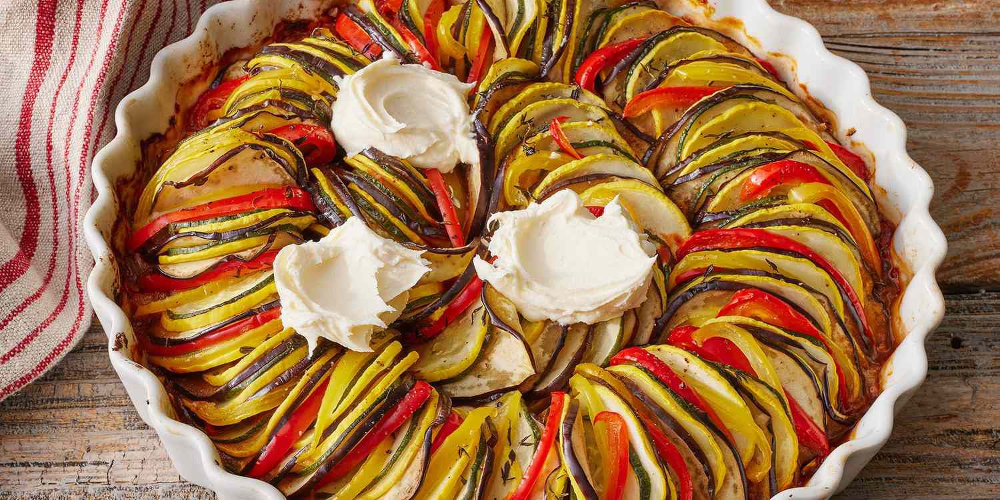

Back
Ratatouille

Ratatouille is a classic French vegetable stew that originated in the
Provence region of France. It is made with a variety of fresh vegetables,
such as eggplant, zucchini, bell peppers, onions, and tomatoes, which are
cooked slowly in olive oil until they are tender and flavorful. Ratatouille
can be served as a side dish, a vegetarian main course, or even as a topping for
crusty bread or pasta. It is a delicious and healthy way to enjoy a variety of
fresh summer vegetables, and its rich flavors and rustic charm make it a beloved
classic in French cuisine.
Here's a simple recipe for making ratatouille:
Ingredients:
- 1 large eggplant, diced
- 2 zucchini, diced
- 2 bell peppers (red, yellow, or orange), diced
- 1 onion, diced
- 3 cloves garlic, minced
- 3 large tomatoes, diced
- 2 tablespoons olive oil
- 1 tablespoon chopped fresh thyme
- Salt and pepper to taste
Instructions:
- Heat the olive oil in a large pot or Dutch oven over medium-high heat.
Add the diced onion and cook for 2-3 minutes,
or until it begins to soften.
- Add the diced eggplant, zucchini, and bell peppers to the pot and stir
to combine. Cook for 5-7 minutes,
or until the vegetables start to soften.
- Add the minced garlic and cook for an additional 1-2 minutes,
or until fragrant.
- Add the diced tomatoes and fresh thyme to the pot and stir to combine.
Reduce the heat to low and cover the pot with a lid.
- Allow the ratatouille to simmer for 20-25 minutes, stirring occasionally,
until all the vegetables are tender and the flavors have melded together.
- Season with salt and pepper to taste.